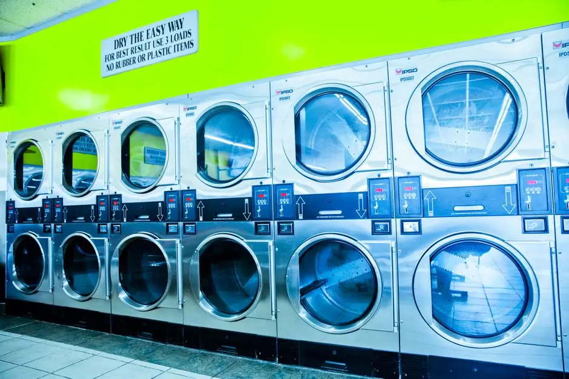
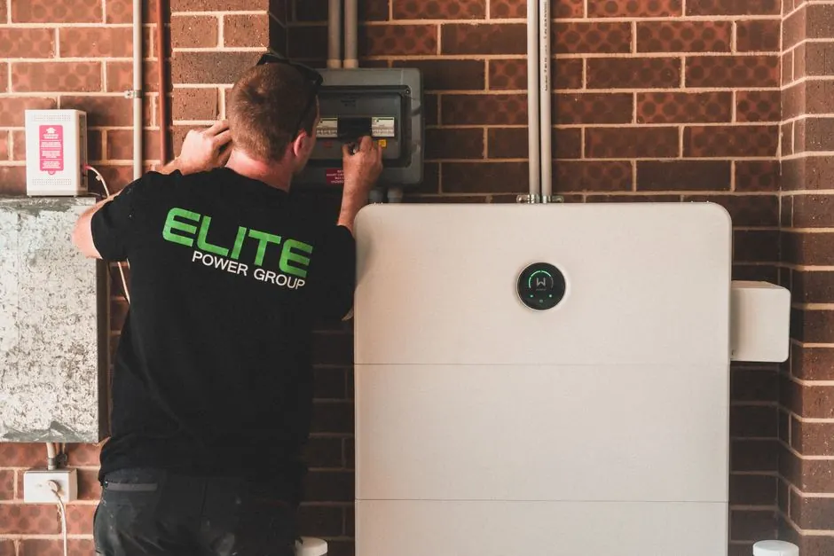
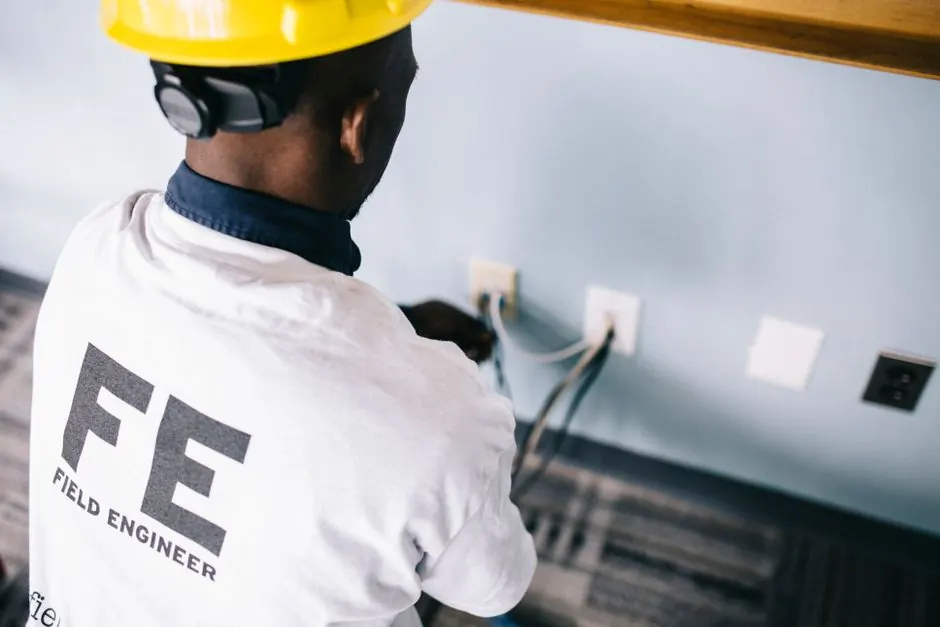
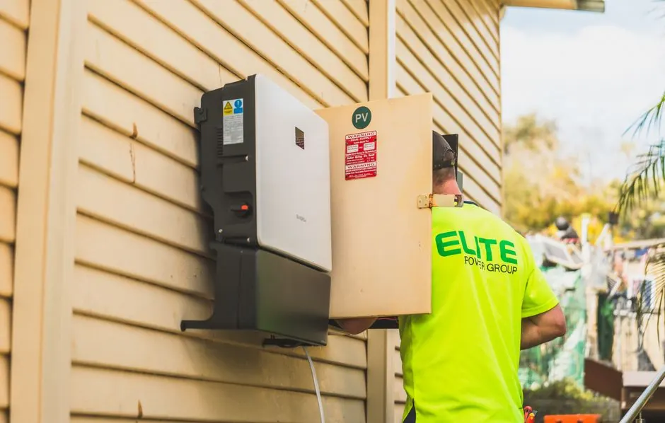

Bayfront Dryer Works
Sarasota, Florida • Same-Day Local Dryer Service
Reliable and efficient dryer belt solutions.
Dryer Belt Replacement Sarasota FL
Dryer Belt Replacement Sarasota FL is crucial for ensuring your dryer operates effectively. Our affordable Dryer Belt Services in Sarasota help you avoid costly repairs and extend your appliance's lifespan.
Live dispatcherUpfront optionsBacked workmanship
What's included
What Our Dryer Belt Replacement Includes
Our Dryer Belt Replacement service covers all necessary aspects of the replacement process, ensuring your dryer is back to optimal performance.
Comprehensive Inspection
We start with a thorough inspection of your dryer to identify any underlying issues before replacing the belt.
High-Quality Parts
We use only high-quality replacement belts that meet or exceed manufacturer specifications for durability.
Testing and Calibration
After installation, we test the dryer to ensure it operates correctly and calibrate settings for optimal performance.
Maintenance Tips
We provide you with tips and best practices for maintaining your dryer to prevent future issues.
Service overview
Understanding Dryer Belt Replacement Sarasota FL
Dryer Belt Replacement Sarasota FL is a service that involves replacing the worn-out or broken dryer belt, which connects the motor to the drum, allowing it to spin. This replacement is vital for the efficient operation of your dryer and prevents further damage to the appliance.
Local Sarasota customers often need this service due to the humid climate, which can wear down dryer belts faster. Common signs include the dryer drum not spinning or unusual noises. Our same-day Dryer Belt Replacement in Sarasota ensures your appliance is back in working order quickly.

How we workWe verify the cause, compare realistic options, and confirm the repair before we leave.
The service timeline
The Dryer Belt Replacement Process
The process flexes to the condition, but these checkpoints keep decisions clear.
Initial Assessment
We begin with a thorough inspection of your dryer to diagnose the issue. This typically takes about 30 minutes and helps us determine if a belt replacement is necessary.
Belt Replacement
Our technician will replace the worn or damaged dryer belt with a high-quality replacement, which usually takes about 1 hour, ensuring proper installation.
Testing
After the replacement, we test the dryer to ensure it operates correctly. This step is crucial for confirming that the new belt functions as intended.
Final Inspection
We conduct a final inspection to ensure everything is in order. This includes checking for any other potential issues that may need attention.
Customer Walkthrough
Finally, we walk you through the work done and provide tips for maintaining your dryer, ensuring you understand how to best care for your appliance.
Tools & methods
Tools and Methods for Dryer Belt Replacement
Purpose-built equipment, used by trained technicians, so the job is done accurately the first time.
Screwdriver
Used for removing the dryer panel and accessing internal components.
Multimeter
Checks electrical connections and ensures the dryer is receiving power.
Pliers
Helpful for gripping and manipulating the dryer belt during installation.
Wrench
Used to secure any bolts or screws that may need tightening during the replacement process.
Use cases
When to Use Dryer Belt Replacement
These examples show how the service framework adapts rather than forcing every call through one repair.

Before: Loud Noises During Operation
The dryer produced loud screeching noises, indicating a failing belt. → Post-replacement, the dryer operates quietly, ensuring a peaceful laundry experience.
Before: Clothes Taking Too Long to Dry
Clothes were taking twice as long to dry, leading to frustration. → With the new belt, drying times decreased significantly, saving energy and time.
Problems we solve
Problems Solved with Dryer Belt Replacement
Our Dryer Belt Replacement service addresses common issues faced by Sarasota residents, ensuring your appliance runs smoothly.
Drum not spinning due to a broken belt
We replace the broken belt quickly, restoring normal function and efficiency to your dryer.
Loud noises during operation
Our experts identify the source of the noise and replace the belt, ensuring quiet operation.
Clothes taking too long to dry
By replacing the dryer belt, we improve drying times and appliance efficiency.
Pricing process
Pricing for Dryer Belt Replacement
Upfront Quotes • No Hidden Fees
Dryer Model
Different models may require specific belts, affecting the overall cost.
Labor Time
More complex installations may take longer, increasing labor costs.
Additional Repairs
If other components are damaged, repairs will add to the overall price.
How do I know if my dryer belt needs replacement in Sarasota?
If your dryer drum isn't spinning or you hear unusual noises, it may indicate a worn belt. Contact us for a diagnostic assessment.
What is the cost of dryer belt replacement in Sarasota?
The cost of dryer belt replacement in Sarasota depends on the specific dryer model, idler pulley condition, and drum rollers. We provide upfront, transparent quotes before any repair work begins with no hidden fees.
Can you replace a dryer belt in Sarasota?
Yes, we specialize in Dryer Belt Replacement Sarasota FL, ensuring your appliance is serviced by trained professionals.
What are the signs of a failing dryer belt?
Signs include the drum not spinning, clothes taking longer to dry, and unusual noises. If you notice these, it's time for a replacement.
Ready when you are
Schedule Your Dryer Belt Replacement Sarasota FL Today
Don't let a faulty dryer belt disrupt your routine. Contact us for reliable and professional service.

Talk with the local team
Request Dryer Belt Replacement
We're here to help! Reach out to us for any dryer repair needs. Our team is available during business hours to assist you.
Instant Phone Dispatch
Call Directly for Immediate Service
No waiting for email replies or form submissions. Speak directly with our local Sarasota dispatch team to confirm technician availability and same-day arrival times.
- Same-Day Arrival: Vans stocked with common dryer parts
- Upfront Quotes: Clear diagnostic estimates before work
- All Brands Serviced: Electric & gas dryer certified
- Local Dispatch: Originating from 3856 Yellowstone Cir